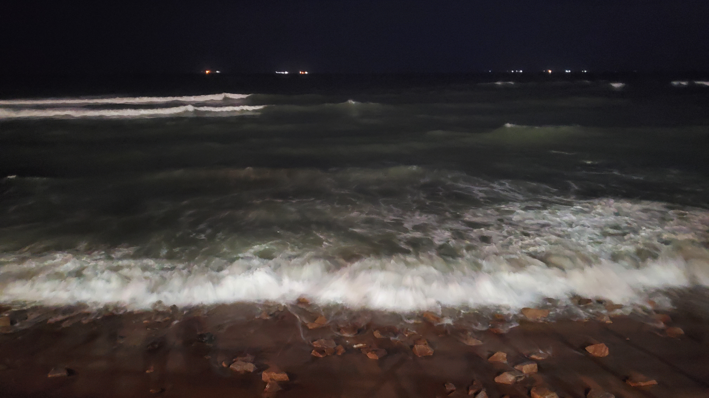

青岛青年冷原子
Table of Contents
1. 还是最喜欢 poster 环节
第二次参加青年冷原子. 第一次是在两年前. 还是最喜欢 poster 环节, 与人交流的快感.
这是第二次参加 poster. 还是比较遗憾, 两年来, 我的课题并没有什么实质性的进展. 与 两年前不同的是, 参加 poster 时能够感觉自己的知识比之前充实, 能找到一个人, 把他的 工作从头到尾问清楚.
也许我真的不适合做科研, 也许科研并不是要我想像的那样做. 但只要自己感觉到这两年是 充实的就够了. 一点一点, 按自己的标准来吧.
2. 青岛
2.1. 啤酒与gala(蛤蜊)
什么时候能够喝醉一次?
蛤蜊蘸着醋, 一会蛤蜊壳就可以堆成一坐小山.

2.2. 恍惚回到烟大
晚上在海边的沙滩上, 有一种错觉, 回过头去就是烟大东门.

2.3. 淋雨
专门跑去五四广场淋雨. 难得的契机.

2.4. 没有追到的日落
下崂山, 最终没有追上日落. 在家里, 看到了日落.

3. 不要结束
总觉得现在的事, 应该发生在 16 岁身上. 多么希望青春不曾结束, 不要结束!